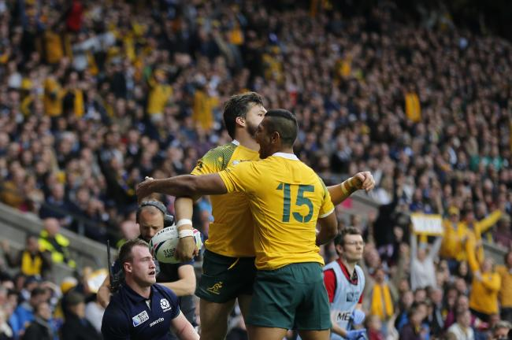
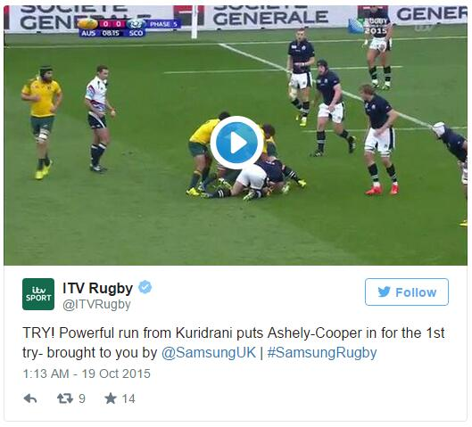
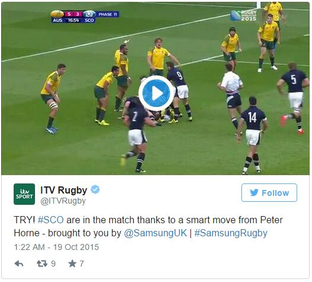
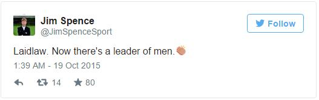
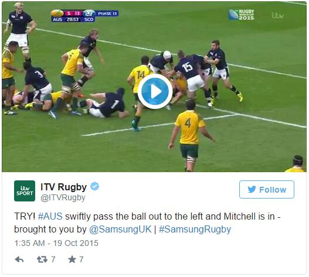
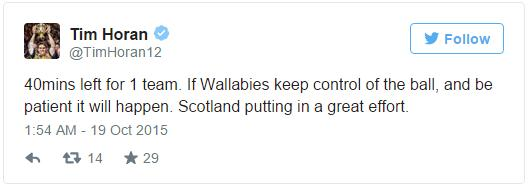
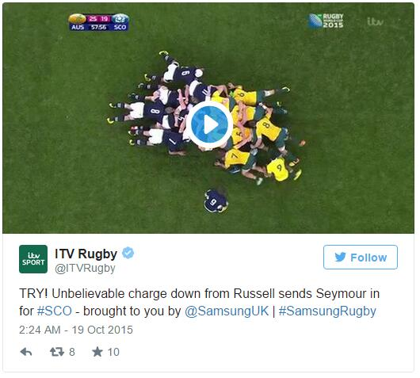
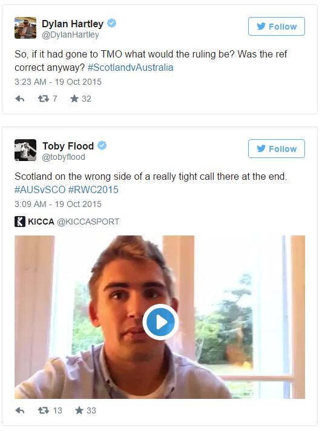

A controversial last-minute penalty for Australia handed them a 35-34 victory over Scotland at Twickenham in a thrilling last quarter-final of the 2015 Rugby World Cup to join New Zealand, South Africa and Argentina in an all-Southern Hemisphere final four.
Peter Horne went over to help the Scots to an early lead, but Michael Hooper, Drew Mitchell and Adam Ashley-Cooper all scored tries in the first half to narrow the gap to one point.
A second from Mitchell and a try from Tevita Kuridrani put the Australians in a strong position, but Tommy Seymour and a late touch down from Mark Bennett gave Scotland a two-point lead with just minutes remaining.
Referee Craig Joubert handed the Wallabies a late penalty for a questionable offside call, and with Scotland unable to appeal to the television match official Bernard Foley sealed a dramatic win.
The match was an incredibly tight contest, with both teams wrestling for the lead throughout, but Foley proved decisive after almost costing his side with several missed conversions.
Australia began the stronger of the two as they pushed forward from the outset, and the Wallabies were almost ahead after five minutes through Mitchell, but the winger dropped Foley's offload over the line.
Just four minutes later, they went over properly, as Kuridrani made a powerful charge before offloading to Ashley-Cooper, who ran unopposed down the right flank to go over, per ITV Rugby:
Scotland responded well, and when Scott Fardy gave away a penalty, Greig Laidlaw made no mistake with his kick.
Vern Cotter's side maintained their spell of pressure and were rewarded with a try of their own after 18 minutes as Horne capitalised on some lax defending from Australia to sneak over:
The Scots extended their lead four minutes later when the Wallabies were penalised for collapsing a scrum. Laidlaw duly tucked away the kick, with sports broadcaster Jim Spence noting he led by example:
Australia stretched the Scottish line, and when they overcommitted to a ruck, the Wallabies took full advantage of their overlap on the left through Mitchell:
Another penalty from Laidlaw gave Scotland a six-point lead, but they were unable to take that lead into the break as Hooper scrambled over from a maul, though they were still narrowly ahead thanks to Foley's inability to convert any of the first three tries.
Former Australia player Tim Horan praised the Scots but believed his old side had enough to triumph over the 80 minutes:
Sean Maitland was sin-binned for a deliberate knock-on immediately after the restart, and with a man down, Scotland were helpless to prevent Australia going over in the corner for Mitchell's brace, with Foley finally able to apply a conversion.
Laidlaw and Foley exchanged penalties in an end-to-end contest, before Seymour pulled back a try for Scotland just before the hour mark after some excellent work from Finn Russell:
Australia restored their lead just five minutes later, though. The ball was shifted left to Kuridrani after Hooper drove at the line, and the outside-centre cleverly sold the Scots a dummy before powering through two players to touch down and put his side in a commanding position.
A penalty from Laidlaw and a Bennett try with just six minutes remaining looked to have snatched a late win for Scotland, but with less than a minute remaining, Foley stepped up to take a decisive penalty and held his nerve to stick it between the posts and break Scottish hearts.
The penalty was given against Jon Welsh for a deliberate offside, but the ball appeared to come off an Australian player. England's Dylan Hartley and Toby Flood were among many pros questioning the decision:
The Wallabies face Argentina in a mouthwatering semi-final which could prove to be equally dramatic after the Pumas shocked the Irish.
Foley will need to improve his kicking as it almost cost his side on Sunday, and the fly-half's success or failure will almost inevitably have a significant impact on the outcome of the semi-final.